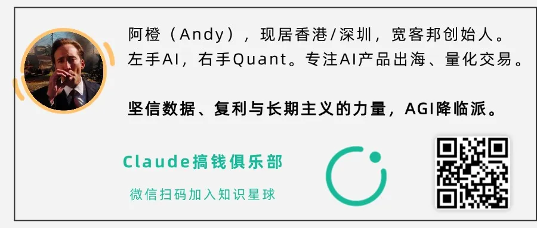
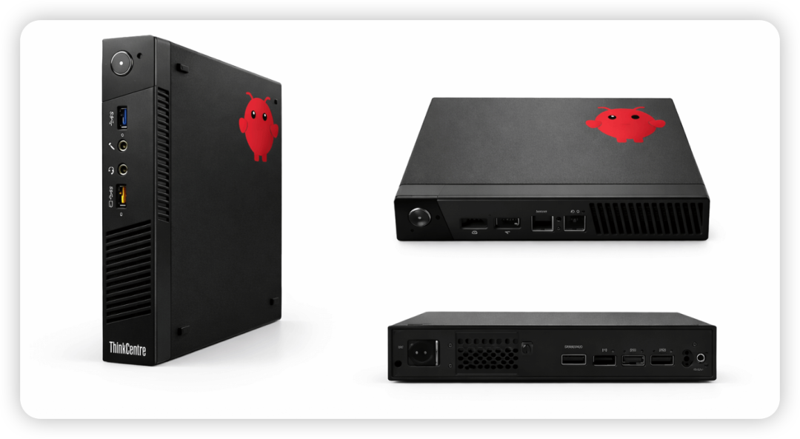
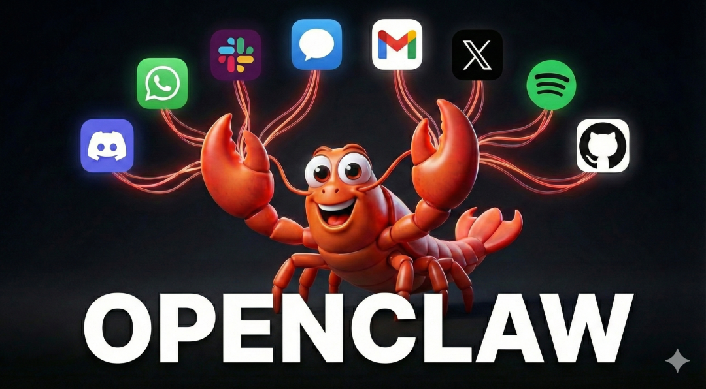
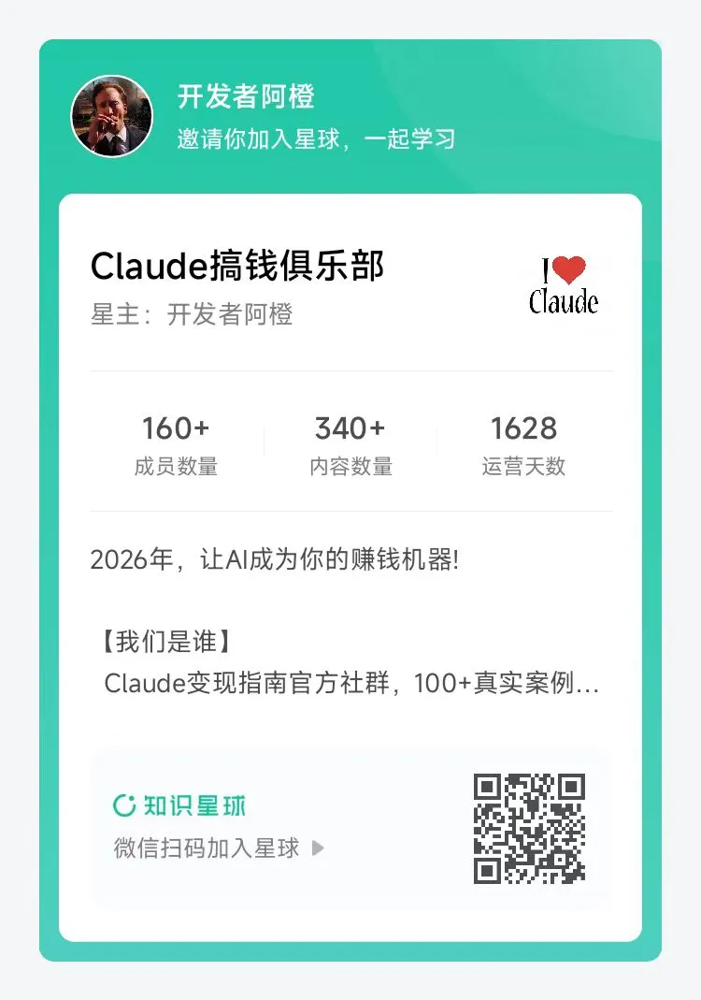

每个现象级产品的诞生，都会带来一波"淘金热"。OpenClaw正在成为这样的平台。
前几天有位星球会员问我：最近爆火的OpenClaw使用场景是什么？我可以用它来赚钱吗？今天我们就来梳理一下OpenClaw到底有哪些商业变现的点子。
一、OpenClaw不只是工具
OpenClaw的三个核心能力——聊天执行复杂任务、丰富的Skill插件生态、持续在线的数字分身——恰好构成了创业的"技术杠杆"。一个人+OpenClaw，可以干五个人的活。
这不是简单的"工具升级"，而是"生产方式重构"。
现在的OpenClaw，就像2008年的App Store
1.1 智能穿戴与家庭IoT
最近有人把智能眼镜接入了OpenClaw，实现了一句话控制设备的"贾维斯体验"。国内智能穿戴厂商（眼镜、手环、耳机）只要开放API，接入OpenClaw就是顺水推舟的事。
更有想象力的是家庭IoT。去华强北找波人，做个小硬件，预装OpenClaw，接入IoT协议，代替家里的小爱同学和天猫精灵。

区别在哪？小爱、天猫精灵是"应答式"的——你说它才动，说完就忘。OpenClaw是"陪伴式"的——有记忆、会主动、能异步。
你说"查快递"，它不急着回，等查好了再推给你。记住你每周三早会，自动提醒带资料。发现你下单感冒药，第二天主动提醒你吃药。
这就是降维打击。
能怎么做？
做"OpenClaw × 智能穿戴/IoT"的中间件平台，深度适配一两个设备，卖给健身房、物流公司等B端客户。或者做家庭智能硬件，预装OpenClaw系统。
1.2 云端工作站与Skills商用市场
OpenClaw需要特定配置——模型、Skills、依赖库、网络代理。对非技术用户，部署门槛不低。
两个方向：
一是做"OpenClaw专用镜像"。预装常用Skills、配置好模型、优化资源占用。用户一键启动，开箱即用。按小时收费或订阅制，就像OpenClaw的Heroku。
二是做"Skill Store"。现在OpenClaw的Skills散落在GitHub、Discord，想找好用的Skill像大海捞针。做一个审核、打分、推荐的市场，筛选出真正有商业价值的Skills（股票分析、财报解读、社媒管理），在这个基础上持续优化做成"商业插件"卖给企业。
二、技术杠杆：用OpenClaw重构企业运营
2.1 企业级数字员工
现在很多公司的AI客服是"问答式"的，从知识库找答案回复，还经常答非所问。
OpenClaw可以做得更好。因为它有记忆、能跨会话、能主动执行任务。
能怎么做？
为中小企业部署"数字员工"，在安全沙盒内处理真实业务：客户咨询（查询库存、核算报价、生成订单）、营销管理（群发优惠、跟踪效果、分析数据）、数据同步（跨平台搬运数据，从电商到财务到CRM）。

关键是"闭环"——不是回答完就结束，而是把事情办完。客户问"货什么时候发"，数字员工不只回复"预计3天"，而是直接查库存、排物流、发通知、回邮件。
传统SaaS的很多功能，OpenClaw都能代替。因为它是"懂业务的"，不是"背答案的"。
2.2 垂直行业定制
OpenClaw有浏览器自动化能力，意味着人能用鼠标键盘完成的重复性工作，它都能干。
能怎么做？
针对特定行业做"自动化脚本服务"：抢票/抢号（12306、医院挂号、演唱会门票）、自动申报（税务、社保、行政审批）、数据搬运（从A系统导出Excel，清洗整理，导入B系统）。
这些需求不性感，但很值钱。因为你不是卖技术，是"帮客户省人力"。一个文员月薪5000，你的自动化服务收2000/月，老板觉得很划算。而且这些需求是"刚需+高频"，客户粘性极强。
三、AI资产化与Agent经济
3.1 Agent交易平台
现在的自由职业平台（Upwork、Fiverr）是给人用的。但为什么不能给AI用？
能怎么做？
做一个"Agent人才市场"。用户发布任务："谁帮我把1000篇英文研报总结成地道的中文，预算10美元"。你的OpenClaw Agent看到任务，评估能不能干，能干就自动接单、干活、交付、收款。
你睡觉的时候，你的AI在疯狂接单赚钱。类似moltroad、Openwork已经在做这类业务。成本就是一台服务器的电费。
3.2 DeFi套利
加密货币市场的套利机会大量存在——不同交易所之间的价差、流动性挖矿、跨链套利。但这些机会往往只存在几秒甚至几毫秒，手动交易根本来不及。而且计算量巨大、手续费复杂，人脑算不过来。
OpenClaw恰好具备这些能力：24小时运行、快速响应、复杂计算。
能怎么做？
做"Agent套利服务"。编写专门的Skills，让OpenClaw自动发现并执行套利机会。在沙盒或可控范围内运行，风险可控。
当然，DeFi有风险——滑点、网络延迟、合约漏洞。但正是这些风险，才创造了专业服务的价值。
四、程序员的OpenClaw副业路径
前面说的都是"大机会"，但我们没必要一上来就做平台。更实际的路径是：先赚小钱，再想大钱。
最容易上手的：垂直场景定制服务
别想着做平台，先做服务。这些方向投入小、见效快：
智能穿戴/家庭IoT集成——花几百块买个设备，研究怎么接入OpenClaw，先自己用，打磨好体验，在小红书、B站发教程视频接单。
自动化脚本开发——从线上线下需求开始，用OpenClaw实现，跑通后标准化流程，批量复制。
特定行业的信息服务——选垂直领域（比如港股打新、医美价格监控），用OpenClaw持续抓取+分析，推送到微信、飞书等平台。
长期目标：从服务到产品
服务做久了，你会发现重复出现的需求。这时候就可以把它们产品化：把"部署服务"变成"一键安装包"，把"定制脚本"变成"SaaS平台"，把"信息咨询"变成"数据产品"。
产品化后，你的收入就不再和时间挂钩。睡觉的时候，产品也在赚钱。
每个新技术浪潮都有"窗口期"。
OpenClaw的窗口期就是现在。
因为：竞争还不激烈、需求真实存在、技术门槛不高、生态正在形成。最好的开始时间是昨天。其次是现在。
这篇文章只是冰山一角。
我会在知识星球「Claude搞钱俱乐部」持续分享：
• 最新AI副业机会拆解（不止OpenClaw，关注整个AI商业化浪潮） • 可落地的执行方案（具体的代码实现、部署过程、环境配置、成本核算） • 真实案例复盘（踩了什么坑、赚了多少钱、怎么规模化） • 每周一次的AMA问答（你遇到的具体问题，我帮你拆解） • 同行者人脉圈（里面已经有在做AI副业的程序员、独立开发者、小团队）
加入「Claude搞钱俱乐部」知识星球：
